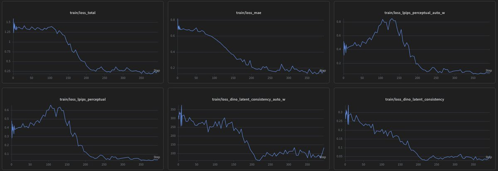
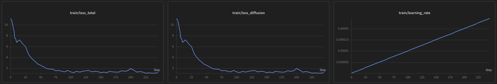
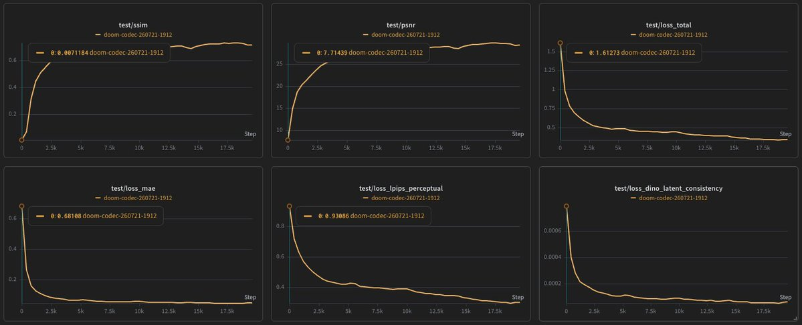
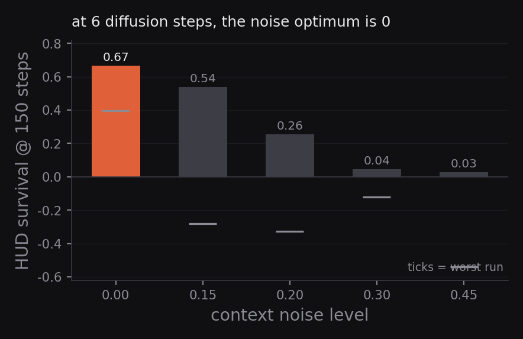
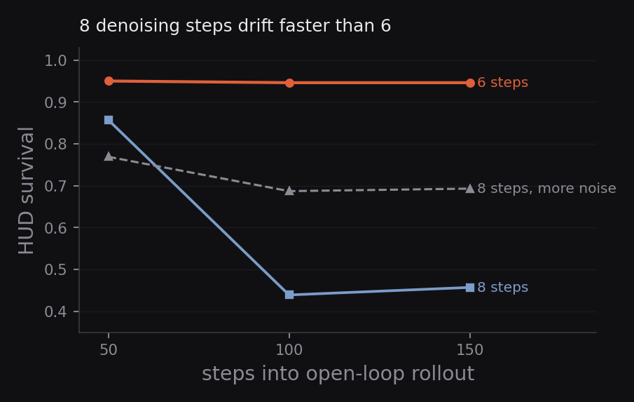

Training and serving a world model that plays doom
There is no doom in this doom
there is no WAD file, no zdoom source port, no game state anywhere. When you press W, nothing moves a player entity through a map, because there is no map, it's a 1.2 billion parameter diffusion transformer that denoises a latent, a decoder turns it into pixels, and those pixels happen to look exactly like you moved forward in Doom because that's the most likely thing to follow the frames it has already seen, given that you pressed W.
the model hallucinates plausible consequences of your inputs, and it is startlingly good at it, but rendering a world is not the same thing as running a game with rules. In here I'll go over the training and the inference for such models on probably the worst case that a WM can be used for but it's nice to learn how these things work.
for more on what is a world model read this great write up by Davide Locatelli
on X - Everyone says "world model." Almost nothing is one.
A little section on MIRA
MIRA (General Intuition / Kyutai / Epic, code) is a multiplayer interactive world model where a frozen DINOv3 representation autoencoder turns video into latents, and a latent diffusion transformer generates the next frame from past frames plus player actions. The released 5B model plays 4 player Rocket League at 20 FPS on one GPU, the architecture is unchanged in everything below, so read the paper for it. What I built is everything around it and wherever a specific architectural detail matters downstream (a resolution constraint, frames-per-latent, per-frame noise levels), I flag it at the point of use. Though I would highly recommend going through their project page for better understanding.
The data adapter
Data used to train the thing lives here with ~2,600 deathmatch episodes, ~167 h, ~21M frames at 480×640 @ 35 fps, two synchronised perspectives per episode. I did have to chunk the episodes at 160 frames, a length divisible by both the 40-frame single-player and 80-frame multiplayer clips, so no frames get stranded.
The decision that matters most is the action mapping. Doom's 14-dim action vector becomes 13 binary key channels plus one continuous mouse-turn channel. That defines the input distribution the model expects at play time.
Resolution is 384×512 and the frame rate stays 35, end to end. 384×512 keeps Doom's 4:3 instead of squashing it, and skips the token tax of native res. 35 to 20 fps isn't an integer stride, so nothing gets retargeted, which is also why "real time" later means 17.5 model steps a second, not 35 frames.
this was trained on a strided subset, not a prefix. At this budget the constraint is training steps, not data, 160 of the 1,320 shards is already far more clips than the run will ever see. But take every 8th shard, not the first 160, so the subset spans the whole capture instead of one slice of it.
The overfit run
Before spending any real money I did what everyone should do, overfit both stages on a handful of real Doom clips, with DINOv3 weights. The codec's loss went from 1.6 to 0.2 with the reconstruction term falling monotonically, the world model's flow matching loss dropped from 11 to about 1.4 in a few hundred steps. No NaNs, no OOM.

codec overfit curves

wm overfit curve
Training the actual thing now
The order is forced by the architecture, codec first because the world model trains on the frozen codec's latents, then the single player world model, then a multiplayer warm start if the budget allows it (spoiler it did not). The codec is per-frame reconstruction, so it's data efficient, a diverse slice of the episodes is plenty. The world model is where scale matters, and it gets everything, each of the two perspectives becomes its own training row, so 167 hours of matches becomes about 334 hours of single player clips.
Most of the details on this are better read off the training code itself, here https://github.com/shauray8/mira-doom, there was nothing crazy just following the MIRA recipe changing a few things here and there.
A little caveat on the codec - The codec's loss terms are auto weight balanced, so the total deliberately isn't a clean signal, the reconstruction metrics are. Game frames plateau in the low 30s dB, and once PSNR stops moving for a handful of straight validations the codec is done and the world model should get the remaining compute, I mean if I had more budget I would sure as hell train the codec a little more but I had to balance it out on the wm, this does bite me in the ass later though.

Codec graphs and recon on step 19k
wm [gt | gen] at 75k steps
Drift
Every frame the model generates becomes context for the next one through the KV-cache. A slightly off frame becomes the premise for the next one, the error grows, and a few seconds into an open loop rollout the world wanders off-distribution. Measured PSNR against a reference trajectory falls from about 30 dB to about 18 over 60 generated frames. The model isn't "broken" when this happens, it's doing exactly what an autoregressive model does with imperfect inputs.
Retraining to fix drift was not on the table at this budget, so everything below is inference time. The property that makes inference time control possible is diffusion forcing itself, the model was trained with an independent noise level per context frame, so it's robust to noisy context by construction.
The free knob is context noise. Inject noise into the context frames at inference and the model trained to handle noisy context starts ignoring fine detail that's probably erroneous. Since accumulated drift is erroneous fine detail, this slows the compounding. On the original 2 diffusion step serving config, a noise level of 0.45 flattened the drift slope by about a quarter and lifted far horizon PSNR, at zero cost.
Then the serving pass in the next section bought enough speed to run 6 diffusion steps instead of 2 and 0.45 actively hurt. The reason is clean once you see it, at 2 steps the latents are noisy, so context noise is damage control for noise that's already there. At 6 steps the latents are clean, and added noise only destroys detail the model would have used.

Soft re-anchoring
Instead of clearing the cache and reseeding from a different real clip (kills drift instantly, but the scene visibly jumps), re-ground the model to its own current frame: decode the latest latent to pixels, re-encode it through the frozen codec, rebuild the context from that. nothing special here, the codec is deterministic, so the round trip snaps the latent back onto the valid manifold without changing the visible scene. One round trip every couple of seconds is enough.
A shorter context window evicts drifted frames sooner, at the cost of forgetting what is behind you. Smooth inputs genuinely help too, because frantic action changes push the model to extrapolate, and extrapolation drifts faster.
Step budget
On inference I did a 2 to 8 step sweep to see which gives me the best quality to fps ratio, and to my surprise 8 steps was measured to perform worse in this case than 6. At the same context noise, the 6-step rollout's HUD survives the full 150-step horizon while the 8 step one breaks before the halfway mark, and 8 also misses the frame budget, so the game runs in slight slow motion on top. My working hypothesis is that longer denoising trajectories at low context noise commit small errors into the latent with more confidence, and autoregression does the rest. Convenient either way, 6 is both the fastest setting inside the frame budget and the best scoring one, so there is no trade to make.

Serving the model
A naive inference pipeline ran at about 1fps, though towards the end of this section it'll jump to about 35fps on a 5090, and that's only because the data caps out at 35fps.
One GPU worker thread owns the model, the KV-cache and the CUDA graph. Warmup, capture and every step on the same thread, since graphs can't be replayed from a different thread than captured. The worker generates continuously from the current action and the handler returns the latest finished frame. The original design generated per request, which is where the 1 fps came from. JPEG encoding is on-GPU, so frames leave as tens of KB rather than a ~600KB pixel copy. gc.freeze() after warmup, because GC pauses were dropping the frame rate to single digits.
The lever from about 11 fps to 24 is a manual torch.cuda.CUDAGraph around the whole step. torch.compile cannot take the denoiser (it has data-dependent control flow), and the stock streaming path grows its KV-cache with a torch.cat every step, which is fatal when a graph replays against fixed memory addresses. So the steady state step is reimplemented with four invariants:
- the latent and the KV-cache live in fixed buffers updated in place, roll and copy, never reallocate.
- all randomness comes from static noise buffers filled outside the graph, otherwise the graph replays identical noise and the picture freezes.
- only the steady-state path is captured, with a short warmup pre-populating the cache so the first call branch never runs inside the graph.
- and the model's two ugly realities are handled explicitly, meaning the empty cache slots of the non-temporal layers and the bf16/fp32 autocast boundary at the decoder.
Frame breakdown
| component | cost | share of a 47 ms frame |
|---|---|---|
| codec ViT decoder | 26.0 ms | 55% |
| DiT forward × (steps + 1) | ~6.2 ms each | ~40% |
| action encode | 0.4 ms | 1% |
the plus one being diffusion-forcing bookkeeping where the freshly denoised latent is re-noised to the context noise level before entering the cache.
Identity attention in the decoder
Here is what is actually happening at play time. Training shows the codec decoder clips of video, so its temporal attention attends across many frames along the frame axis. Interactive play decodes one latent frame at a time, so every temporal attention call, in every one of the 28 decoder blocks, runs with exactly one query and exactly one key.
Now look at what that call computes. Attention takes a softmax over the query's similarity scores against the keys and uses those weights to mix the value vectors. With one key there is exactly one score, and a softmax over a single number is 1, no matter what q and k actually are. The mixing weight is 1, so the output is the value vector, untouched:
>>> out = F.scaled_dot_product_attention(q, k, v, attn_mask=mask) # one query, one key
>>> (out - v).abs().max().item()
0.0 # bit-exact, not approximate
So the layer projects q and k, launches a full attention kernel, runs the entire online softmax machinery, and hands back a copy of a tensor it was already holding. And the kernel cannot know any of this. It is the general cutlass memory-efficient kernel, built for long sequences, and at the decoder's shape (768 batch, 16 heads, head_dim 72) it tiles the degenerate case terribly: about 375 microseconds a call, against 3.8 microseconds for a straight copy of v. Charged in all 28 blocks on every decode, this provable no-op was eating a fifth of the frame.
The fix is a guard inside attend(): when the query and key lengths are both 1, skip the kernel and return v. The one wrinkle is GQA. Where the KV head count is smaller than the query head count, returning v means broadcasting each KV head across its group of query heads first, which is exactly what the kernel's output would have contained anyway. The short circuit is verified bit-identical against the SDPA reference across head counts, GQA ratios, and both causal settings. Decode drops from 30 to 19.4ms, and the frame from 47.3 to 37ms.
The second no-op is a mask. With one query and unbounded context, the causal mask is entirely true, so it constrains nothing. But passing any explicit mask knocks SDPA off its flash and cuDNN backends and onto the slow cutlass path, and that is the shape every streaming step uses, on all five of the DiT's temporal-attention layers, on every diffusion step. Skipping the mask when it is vacuous (a bounded window is a real mask and still gets built) agrees with the masked reference to one bf16 ULP and is worth about 6ms a step.
Compiling the decoder
What remained in the decoder was about 1,700 tiny kernels per decode at 2 to 4 ms each, which is launch overhead bound, and launch overhead is exactly where Inductor shines. It gets max-autotune-no-cudagraphs, and that suffix is required because Inductor's own cudagraph wrapper fights the manual graph. Decode drops again, from 19ms to under 9ms.
For the DiT we already have cuda graphs so compile won't do any good here, the graph already removed the launch overhead.
Two frames per step
The codec decodes one latent step into two consecutive video frames, and the serving loop was keeping one and discarding the other, a frame the decoder had already paid for. Publishing both doubles the delivered frame rate for zero compute. The most embarrassing fix in this post, and the most fps per line changed.
with this, generating flat out is the wrong target. Each step advances two frames of a 35 fps game, so real time is 17.5 steps per second, a 57ms budget, and exceeding it runs the world in fast-forward. The worker paces to that grid, absorbing slow steps into the next slot and resyncing rather than sprinting if it falls behind.
Reseeding between sessions
Reseeding used to invalidate the CUDA graph, so a reset meant a 30-second recapture or nothing. The fix is to reseed through the normal eager path onto temporaries, then copy the values into the graph's existing buffers: shapes are fixed by construction, so the graph stays valid, verified by object identity on the latent and every cache entry. This also fixed a real defect, not just a missing feature. With one persistent player generating from container start, a browser connecting ten minutes later inherited ten minutes of drift, a melted world before touching a key. Sessions now reseed on connect.
The most instructive bugs of the project were small ones sprinkled around the inference path, and every fix came from going back to look at the training data rather than the model. The clearest case: weapon select did nothing, and the model was fine. The client latched a weapon bit on forever once pressed, but in the training split a weapon press is a hold of a couple of frames and exactly one weapon is ever set at a time, so the client was feeding the model a distribution it had never seen. The fixes all followed from the measurements: hold durations are expressed in model steps rather than client frames, because the browser samples at 60 Hz while the model consumes 17.5 actions a second, and mouse movement accumulates between steps instead of being drained once per step, which had been discarding most of every flick.
Also, since I was on a 5090 you could go all fancy with sage attn and stuff, but for my usecase I had a 35fps cap from the dataset, and for inference here frame rate is not the bottleneck anyway.
the model generating doom frames on a 5090 with mapped inputs
Episodic memory
While working on the memory problem I saw Avik Sethia's WorldKV post, and to understand the method properly, go read that. Here is only what it did on my use case.
The window is 19 latent frames, about a second of gameplay, and anything older is not attenuated, it is dropped, so when you turn back into a room the model re-invents it. I archived the KV of evicted frames in a bank keyed by pose (dead-reckoned from the mouse-turn channel, since Doom has no camera pose, with one turn unit calibrated to almost exactly a degree) and swapped the best matches into a reserved slice of the window every step, no retraining, no window growth, and RoPE is applied after cache concatenation so a retrieved frame adopts its new slot's position for free.
For tests I just looked away, dwelled for double the window, looked back, and scored consistency with the pre-turn view. Retrieval did its half perfectly, the right frames were found and inserted every time, and the model ignored them: return-consistency with memory on sat within noise of memory off at its best configuration, decayed back to baseline as I reserved more slots, and in a separate run the sign flipped entirely.
The reason is structural, not retrieval. Retrieved frames land at the oldest RoPE positions, where fifteen or more contiguous recent frames outvote them, and every reserved slot costs a working-memory slot one for one, so giving it more memory meant giving it a worse present, which is exactly the decay the slot sweep shows. WorldKV's own setting runs an eight-second window where retrieved chunks displace a small share of the context, at a one-second window the trade costs too much.

a full 360° spin | top: memory off, bottom: on
Gist for the whole thing
Model: MIRA, unmodified. Codec is a frozen DINOv3-L/16 with a 28-layer ViT decoder (width 1152) and temporal stride 2. The world model is a ~1.19B DiT, hidden 2048, 16 layers, temporal attention every fourth layer, GQA with 16 query and 4 KV heads, head_dim 128.
Data: chrisxx/doom-2players-mp4, about 2,600 episodes and 167 hours, converted to 384×512 at 35 fps, every 8th shard (160 of 1,320), 13 keys plus turn-delta on the mouse channel.
Trained on 2×H100 under a very tight budget. Codec early-stopped on PSNR plateau. Single-player world model 75k steps. Long-context finetune 13k. Paper-scale reference is 60k / 250k / 40k.
Serving on a single 5090: 6 diffusion steps, context noise 0, 19 context latents, step from 47 to 29ms, 35 fps paced, VRAM 15.7GB.
Checkpoints: shauray/mira-doom. Code: shauray8/mira-doom.
References
- MIRA: Multiplayer Interactive World Models with Representation Autoencoders and the code
- https://huggingface.co/datasets/chrisxx/doom-2players-mp4, the dataset
- DINOv3 (gated codec encoder weights)
- WorldKV / episodic memory for real-time world models, the inspiration for the memory experiment
- https://github.com/shauray8/mira-doom, code for doom inference
- https://huggingface.co/shauray/mira-doom, the trained checkpoints